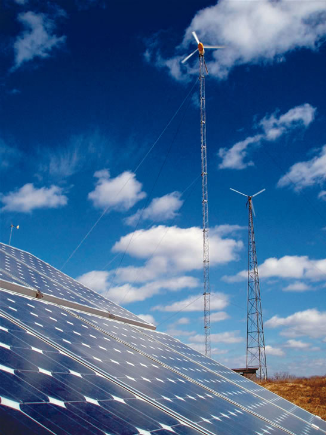

How do I find distributors of residential solar water-heating equipment for my state?
Jonathon G.
Northern California
Contact your local Solar Energy Industries Association (SEIA) chapter (www.seia.org) or your state's chapter of the American Solar Energy Society (www.ases.org). In states without either, I would contact the closest state chapter because many distributors cover multistate regions or will know of a contact in your state. The vendor you buy the system from can recommend a good installer, too.
A quality installer should belong to a state or regional SEIA chapter or the national association. Ask to see pictures of previous installa tions and request references you can contact.
With recent Exxon Mobil ads relegating wind to less than 1 percent of future energy use and the introduc tion of legislation to restrict wind farms by Sens. Lamar Alexander, R-Tenn., and John Warner, R-Va., has the sheen been blown off wind?
Haley R. Winchester,
Virginia
Quite the opposite is true. In 2004, the global wind-power indu-stry in stalled 8,000 megawatts (MW) of new wind turbines, according to the Global Wind Energy Council. Europe led the world wind-power market, in stalling 5,774 MW, which accounted for about 72 percent of that growth. Total world wind capacity now stands at 47,317 MW (1 MW is enough to power 300 U.S. homes).
In March, the United Kingdom's Sustainable Development Commission released a report that concludes wind power is a better alternative than nuclear energy for addressing climate change. The commission's 176-page report concludes wind power, along with other renewables, offers the only truly sustainable domestically sourced option for electric generation over the long term. The commission, financed by the usually- pro-nuclear energy Trade and Industry Department, concluded wind en ergy is quiet, economical and less expensive than nuclear power.
In April and May, two fact sheets released by the U.S. Department of Energy s National Renewable Energy Laboratory (NREL) highlighted the benefits of wind: less emissions from fossil fuelburning electric plants; more energy potential, job growth and rural development. The Wind Powering America Fact Sheet Series entitled Improving Regional Air Quality with Wind Energy provides an overview of how electricity generated from zero-emission wind energy can help states and municipalities improve air quality, achieve the Clean Air Act standards and reduce pollution-control costs for taxpayers.
The same report provides a case study about the purchase of wind energy by Montgomery County, Md. The fact sheets also highlight to days rising coal and gas prices, and report how new wind plants compete favorably against other sources of electricity. It describes the top 10 benefits of wind energy, including the growth of new jobs and tax revenues.
Another report describes how an Iowa farm family acquired a wind turbine using the U.S. Department of Agriculture's Farm Bill, Section 9006, which makes available grants and loans for renewable energy to farmers, ranchers and other rural small business owners. While there are clear challenges to some wind projects, the future is looking quite solid for wind power for large grid-tied and small on-site generation.
I was wondering about the high cost of silicon and whether it will prevent the price drop in solar residential systems that everyone expects.
Jerry H.
South Carolina
Today's photovoltaic (PV) solar panels are made primarily from silicon, which in the 1990s was de rived from the silicon waste that came from the computer chip industry.
In April, reports from the biggest PV companies indicated that solargrade silicon prices had jumped from $9 per kilo in 2000 to $25 last year, and were expected to jump to $60 this year. These higher silicon prices are a result of the fast growth of the global PV industry, which produced more than 1.2 gigawatts of power in 2004, and a result of new efficiencies in the traditional silicon chip industry that leave behind less solar-grade silicon waste.
With the SEIA's announcement of the American Solar Power Industry Research and Investment in Technology collaborative, the PV industry is working to build upon its earlier efforts for fair access to sili con. The industry-funded collaborative is designed to reduce the cost, increase the efficiency and improve the manufacturing process of PV through better designs and processes, which should lead to low-cost manufacturing and new silicon production processes, among other industry goals.
While there are some promising PV materials in the marketplace, such as thin films that replace silicon with indium, selenium and gallium, and cadmium telluride, another emerging player will be nonsilicon nanotechnology, which uses light-sensitive dyes. In fact, Konarka Technologies, a manufacturer of nonsilicon nanotechnology, is setting up a pilot plant this year. With smart tactics for using existing nonsilicon materials, nanotechnology and improved efficiency in the use of traditional silicon, the silicon shortage issue should be seen only as growing pains for an industry in its early adolescence.
For more information, go to the National Center for Photovoltaics Web site at www.nrel.gov.
I live in upstate New York and have a 1,200-square-foot hot water radiant-heated area, which is well-insulated. I have a relatively large southfacing roof area available for solar heating, so I need some information on solar heating equipment to supplement or replace two large 40,000-British thermal unit (Btu) propane heaters in this system.
Bob M.
New York
From my point of view, you must ask yourself when you need the heat the most. The answer is generally when the sun is not out, such as in the middle of the night or in the winter when days are shorter. I say keep your propane system as your evening-only input. Adding a solar thermal heat ing unit to your propane radiant-heating system is possible, but you'll need a large, well-designed system, in addition to space for both hot-water containers and solar panels on the roof.
If you choose solar space heat ing, Don Bradley of Solar Strategies in Philadelphia says you will need ample hot-water storage, from 400 to 700 gallons, depending on the size of the area needing heat. In addition to two solar hotwater panels for domestic solar water-heating use, you will need at least eight solar thermal panels for space heating. Ask a qualified solar installer to check the solar access and roof orientation to insure optimum performance. Good luck!
How do I find information about any green energy providers in my area?
-D.L.
Toledo, Ohio
Buying utility-traded renewable energy credits, or “green power,” is a solid step consumers can take to transform the energy market - particularly renters and homeowners who have limited options for using solar water-heating, geothermal heat pumps, small-scale wind power, photovoltaics or other on-site clean distributed energy sources.
In March of 2004, NREL released its annual ranking of leading “green pricing” utility programs, and, according to NREL, more than 500 utilities in 33 states now offer these programs. In 2003, more than 1.2 billion kilowatt-hours of renewable energy credits were sold through green pricing programs, an increase of more than 30 percent from 2002.
The Environmental Protection Agency has a “Green Power Partnership” section on its Web site that features a locator for green power providers by state. One of the better e-newsletters is distributed by the Western Area Power Administration (www.wapa.gov/es/greennews) and is called “Green Power and Market Research News.”
Scott Sklar is co-author of Consumer Guide to Solar Energy and is president of The Stella Group, a distributed-energy marketing and policy firm in Washington, D.C. Send your questions to solarsklar@aol.com. Reprinted from www.renewableenergyaccess.com.
|
 |
|
|